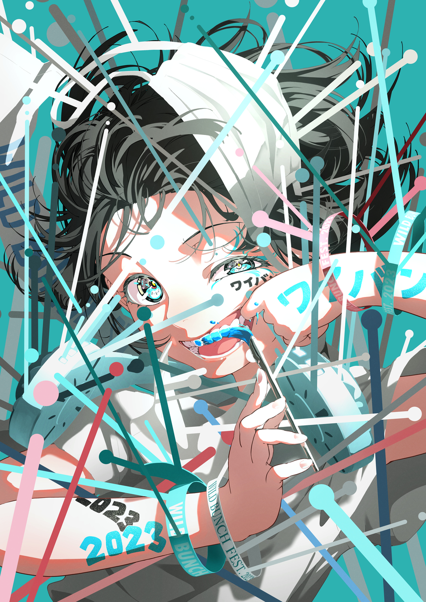
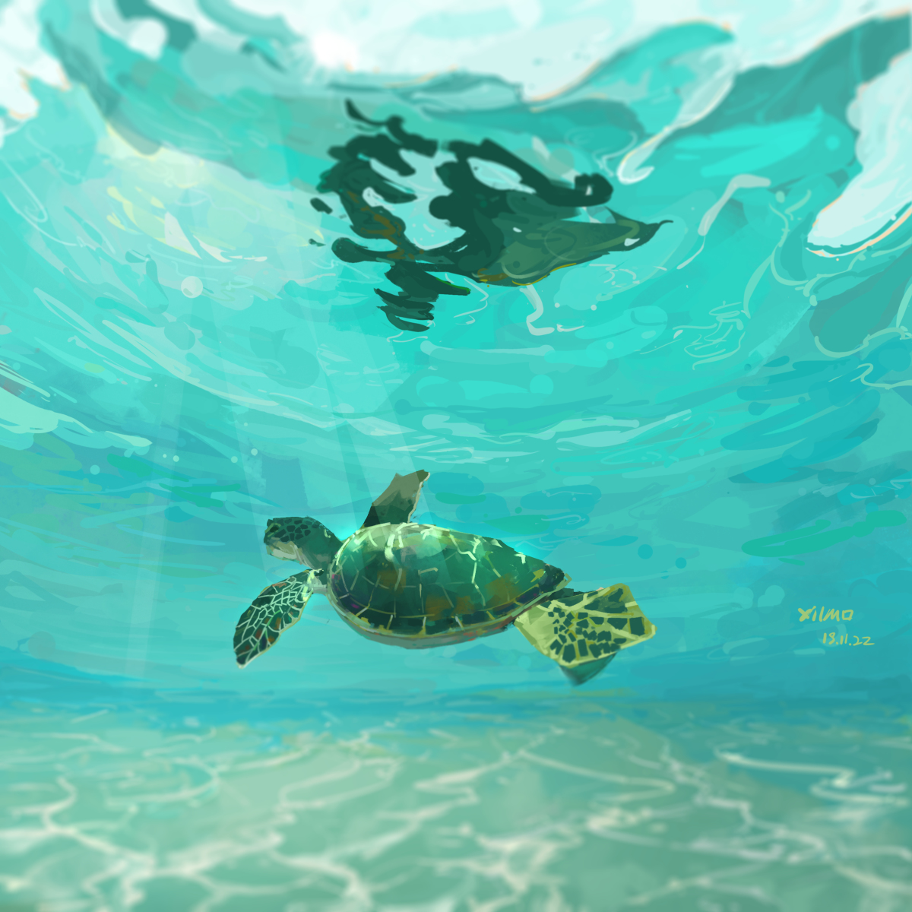

Mai Yoneyama is a famous Japanese illustrator
and animator who worked on Kill la Kill, Kiznaiver, and Darling in the Franxx.
Her solo illustrations are known for sharp color contrast, strong visual tension,
and a fusion of anime and fasion design aesthetics.
She now works as a contemporary artist as well.

Nico-Tine
Nico-Tine is a digital illustrator famous for clean linework and
vibrant color palettes, often featuring original characters and stylish, expressive poses.
Their work also features bold usages of geometric shapes and graphics

XilmO
XilmO is a Chinese illustrator known for
a dreamy, textured style that blends painterly techniques with
stylized anime forms. Their illustrations often evoke a gentle,
ethereal atmosphere focusing on emotions and storytelling.